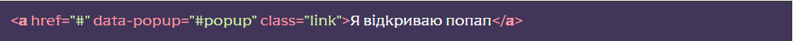
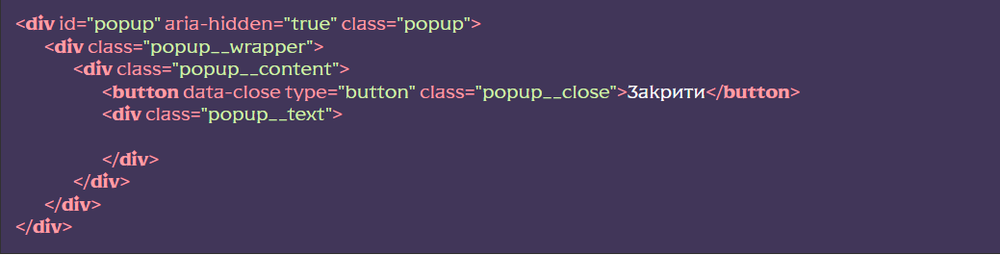
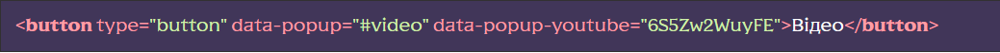
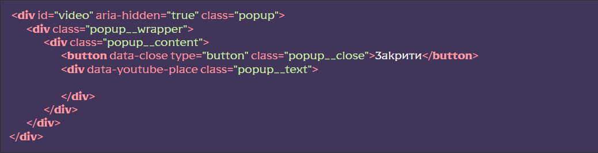
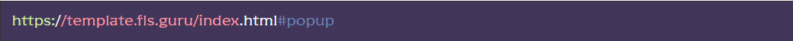
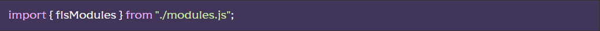
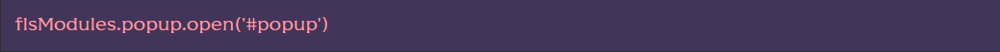
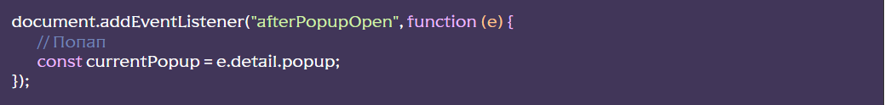

Підключення функціоналу
- [HTML] Підключити файл _popup.htm, після обгортки wrapper, у HTML-файлі сторінки @@include(‘html/_popup.htm’,{}), можна використати сніпет pop
- [SCSS] Підключить файл scss/base/popup.scss у файлі scss/base.scss – розкоментувати рядок @import ‘base/popup’;
- [JS] Підключить файл js/libs/popup.js у файлі js/app.js – розкоментувати рядок import ‘./libs/popup.js’
Використання функціоналу
Для того, щоб викликати попап, необхідно на сторінці ввести об’єкт з дата-атрибутом, в якому вказано селектор (клас або id) випливаючого вікна, на яке посилаємось:
Далі відкрити файл html/_popup.htm, розкоментувати HTML-код підготовки попапа, вказати селектор (id або клас), за яким викликається попап, змінити код під свої потреби.
У прикладі попап викликається за id popup:
Відкриття YouTube відео у попапі
Щоб відкрити відеоролик у попапі, слід додати до кнопки, яка викликає попап, атрибут data-popup-youtube, а як значення вказати код ролика. Також слід вказати атрибут data-popup-youtube-place для об’єкта, в якому хочемо вивести ролик (якщо атрибут data-popup-youtube-place не буде вказано, ролик автоматично з’явиться в об’єкті з класом popup__text):
 Стилі попапа можна писати та змінювати у файлі scss/base/popup.scss
Відкриття попапа по хешу
об відкрити попап при відкритті сторінки, додаємо до адреси хеш з ім’ям селектора попапа
Методи та події
Методи
Працювати з попапом з будь-якого місця можна імпортувати змінну flsModules:
Далі звернутися до класу popup та працювати з методом, наприклад open()
де #popup селектор попапа
Увага!Після створення білду проєкту (режим build) константа flsModules змінюється на modules_flsModules.Тобто запит буде modules_flsModules.popup.open(‘#popup’);
Події
У класі попапів існує ряд подій:
- beforePopupOpen – спрацює перед відкриттям попапа
- afterPopupOpen – спрацює після відкриття попапа
- beforePopupClose – спрацює перед відкриттям попапа
- afterPopupClose – спрацює після відкриття попапа
Щоб працювати з подією вішаємо прослуховування на document
